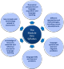

Delta Module One Course
 |
Syllabus area 2
|
 |
This section of the course covers the second area of the Delta Module One syllabus. At the end of this section, you should be able to:
|
This guide will lead you to all three targets.
From time to time, you will invited to go off to guides on other parts
of this site to consolidate what you have learned and there will be some
worksheet tests of your understanding as we go along.
 |
An overview of what you need to know |
- A methodology will be based on two theories:
- what language is.
That is to say, whether it is a system of meanings set in discoverable grammar rules or whether it is primarily a communicative tool in which rules and the memorisation of vocabulary play little part. - what learning is.
That is to say, whether it is a matter of acquiring good habits, of repeating what one hears or making an internal grammar of the language alongside a set of precepts about how the language is used.
- what language is.
- A methodology will be recognisable because the design of materials and teaching procedures will reflect one or other of the first two theories.
- The teaching techniques and procedures adopted in the classroom will be appropriate to the underlying theories from which the educator / trainer / coach / materials writer etc. is / are working.
This section of the course is designed to help you identify these
three aspects of a methodology and to be able to engage in some critical
discussion of them.
If you come across a piece of material and a proposed way of using
it in the classroom (for example, listening to a tape recording of
models of vowel sounds and requiring the learners to repeat them),
then you should be well placed to speculate intelligently about the
teacher / course materials writer's underlying assumptions about
both learning and language.
The main guide which we shall use in this section is entitled Methodology unpacked and
refined and you will shortly be asked to access it.
Before then, however, we'll lay some groundwork.
 |
What qualifies as a methodology? |
Unfortunately, the term methodology is used very loosely because
it is employed in non-technical areas and in areas far removed from
English language teaching.
We need, at the outset to define our terms because in the
examination you will be expected to apply terms such as approach,
technique and method with a certain care.
Here's an overview of a popular way of defining the term for us,
taken from the guide you will shortly encounter.
A methodology contains three elements:
- The approach
This concerns a twofold understanding of- What language is
- How language is learned
- The design
This concerns the practical implications of the approach to issues such as syllabus design, the role of learners, the role of the teacher, the activities which are undertaken in the classroom and the ways the materials are presented. It also concerns overall lesson design, e.g., Task-based, Test–Teach–Test or Presentation–Practice–Production formats. - The procedure
This refers to what we can see happening in the classroom and concerns teaching techniques, ways of approaching skills and systems lessons, error handling, questioning, elicitation and so on.
Area 1 of this course, theoretical perspectives, has covered
theories of how learning happens in some depth and how the
assumptions which materials writers (and teachers) have concerning
the process affects the design of the material and the tasks which
accompany it.
This part of the course is concerned with the rest of a methodology.
 |
|
Now click here for some comments.
There can be no 'right' answer to this, of
course, because your
responses will be based on classroom techniques and approaches that
you use and on your theoretical disposition (assuming you have one).
However, what you may have identified is
- that there is some consistency between what you believe and what you do (and what you ask learners to do) and
- some inconsistency insofar as some of what you do in the classroom is actually in conflict with what you believe language is and how learning happens.
You will not be alone in this and, although the Delta examination asks you to identify the underlying assumptions of the designer by looking at materials, you should not assume that, when interrogated, designers will be aware of all the assumptions they make. Often materials writers include things that just seem to 'work' for them.
|
|
What is language? |
This seems a simple question but the answers people provide will,
if they are in a position to act on them, radically affect how they
design materials and activities in a classroom.
Fundamentally, there are two opposing camps: those who view language
as a system of grammar, phonology and lexis and those who view it as
a way to communicate.
These are not necessarily mutually exclusive views, of course, but
the emphasis one places on one type of analysis or the other will be
very influential.
We can discern four ways to answer the question:
- Language is a system

If you view language as a system of lexemes, phonemes, structures and grammar, which it is, of course, then you will emphasise what Chomsky refers to as competence (i.e., the language that in theory can be formed) over performance (what people actually say and write).
This is a structuralist view of language (and within structuralism there are many competing theories about what the structure actually is).
Materials and teaching techniques (the design of the course) will focus on formal matters above all. - Language is a communicative mechanism

If you view language as a way of communicating ideas between people, which it is, of course, then you will emphasise performance over competence. Although most theories of communicative competence will state that formal linguistic competence (the ability to produce well-formed utterances) is part of the ability to use language to communicate, they will not stop there.
Materials and teaching techniques (the design of the course) will focus on communicative ability above all. - Language is a marker of identity

The view here, which does not compete with the first two views is that the language we speak confirms in part who we are or think we are.
Materials and teaching techniques (the design of the course) will have some focus on affective factors and may make efforts to personalise the language which is produced and practised. - Language is a cultural artefact

The view here, again, not incompatible with the previous three views, is that language is a culturally formed system of meanings which determine how we think about the world and are determined by the needs of the society in which the language developed.
Materials and teaching techniques (the design of the course) will focus on the concepts and cultural influences on the target language. The argument will be that it is difficult to understand and use any other language unless you know something about the environment, activities, needs and concerns of the people who speak it.
These four views are considered in slightly more depth in the guide.
Now, you have a mini-task.
 |
Most professionals in this area
actually hold all four views simultaneously because they are
not mutually exclusive. If that is your position:
|
Your response is unpredictable so there's no right answer
(although there are numbers of wrong answers). If, in what
follows, you replace references to your teaching with references to my materials, you will be putting yourself in
the shoes of a materials designer and that's a good way to approach
the task that asks you to do this in the examination.
Some
suggestions:
- I believe that language is an interlocking set of systems so
in my teaching I focus on form and grammar consistently but do
not forget that pronunciation and style are also systems in the
language.
I do this before I ask learners to apply the language communicatively because I think that form comes first in terms of preparation for tasks and to allow the learners to feel confident. I am placing competence training before performance practice. - I accept that language is primarily a communicative resource so I always include multiple opportunities in my lessons for learners to use language in an effort to communicate their thoughts. I also accept, incidentally, that some useful learning and awareness raising emerges from the effort to communicate, however inaccurate the form of the language is.
- That language is a marker of identity is true for me so I
make sure in my lessons that there are times when the learners
can personalise the language and say things that are true for
themselves.
I am alert to the fact that some of my learners might not feel comfortable speaking in English because they may feel that they cannot express their identities very well with limited linguistic resources.
I never suggest that my learners' language(s) are in any way inferior to English, of course; just different. - There are some things, idiomatic language in particular, that
derive from the culture of English-speaking communities (and
there are lots of those) and I point this out when appropriate.
It is, for example, difficult to figure out the meaning of:
That's just my cup of tea
unless you know a little about tea drinking in Anglophone cultures. - Of course, all languages arise from the cultures in which
they developed. I also know that some concepts in English,
such as tense structures, reflect how its speakers conceptualise
time and that is way of thinking about the world that I know my
learners may not share.
Lexical meaning, too, arises from the community's need to express certain concepts and these needs will vary across cultures. Language is not just a way of talking, it may also be a way of thinking.
I focus in my teaching on making sure that unusual or culturally specific meanings are made clear.
However, although language is a cultural artefact, when it comes to English, my learners need to use it for international communication as a lingua franca. I do not, therefore, include too much cultural information in my lessons because English as an international language is, arguably, culture free and no longer depends for its existence on a native-speaker community.
You may like to re-read this section now, replacing reference to your teaching with reference to the materials I have designed.
 |
Theoretical influences on design |
This is something of an elephant in many classrooms, unnoticed
but important.
Before taking a course at this sort of level, many teachers use
materials because they are appealing, carry out techniques because
they seem to work (or are engaging and enjoyable), use activities
which get people talking or moving and so on, all without properly
considering what principles underlie what they do.
Delta-level people know better and one of the functions of the
Module One examination is to make sure they do.
We have already seen that a theoretical standpoint concerning how
people learn language (whether their first or later ones) will have
profound effects on materials, tasks and activities.
Now it is time to look at some other facets of what goes on in
classrooms to try to see what hypotheses about language and learning are
affecting them.
- Noticing

- The essence of noticing is that learners need to have their attention drawn
to specific features of the language so they can notice either
how the language works or how their own production differs
from, and is probably inferior to, a native-speaker model (or
near offer).
Clearly, if language is seen as an unconsciously acquired (rather than learned) communicative tool, whether people consciously notice differences in the language they produce from what they are presented with makes no difference and is not important.
Noticing techniques will, however, be central to people whose theoretical perspective is that language is a system and its acquisition requires real cognitive effort.
Materials which use highlighting of one form or another can be expected to flow from this theoretical source.
This means that tasks in which learners are asked, for example, to focus on the underlined words or look at the words Mary uses etc. are consciously using noticing as a technique. - Inferring

- Clearly, again, someone who believes that language can be
learned through a process of good habit formation and that can
be encouraged by reinforcement of correct production will have
little truck with the idea of allowing (or even encouraging)
learners to guess at meaning and predict accurately from what is
already known.
Someone who thinks language is learnt by making connections or by forming hypotheses will be more concerned about inferencing. If that is allied to a belief that language is primarily about communication not accuracy, then inferencing techniques will form a part of course and materials design.
This means that you should be alert to materials which ask the learners to work out the meaning of words from co-text and match the meanings to definitions or graphics and similar tasks. Including such tasks is tantamount to assuming that inferring meaning is both possible and useful. - Scaffolding

- This is more than helping or assisting as the guide to it
tries to make clear. It is linked to the idea
of the Zone of Proximal Development because it is here that the
teacher can engage the learner(s) in recognising the usefulness
of targets, maintaining interest in their fulfilment and
supplying just enough help, but no more, for them to be able to
achieve a task.
Closely allied to scaffolding techniques and materials is the concept (from Krashen) of comprehensible input.
Materials writers from both traditions will take pains to ensure that the language presented is comprehensible and manageable even if it contains new target items and skills.
Materials which, for example, contain authentic or quasi-authentic materials which are clearly just above the level of the learners are included by materials writers who see comprehensible input and the effort to keep learners in the ZPD as important aids to learning. - Input and Intake

- Cognitivists will have a lot to say about the ways in which
input is converted to intake (and, eventually, output) through a
process of engaging attention, lodging the item in short-term
memory and then working on it in order that it can find its
place in the long-term memory store (rehearsal and retrieval, in
the jargon).
It is also not an idea that behaviourist theories will have much trouble with because underlying an audio-lingual approach is a process of drawing the learners' attention to a language item and, through a combination of imitation and repetition (rehearsal and retrieval is another way of saying that) lodging the data in the learners' long-term memories, ready to be retrieved and produced as the occasion arises for it.
When items are recycled in a set of materials, this is evidence that the writer of the materials believes that recycling helps to move items from the short- to the long-term memory and may also be evidence that the same writer believes that recycling helps to move lexis from the passive to active memory store. - Structuring lessons

- Lesson structure is a key part of course and materials
design and heavily influenced by theoretical understanding of
approaches.
If one believes that, for example, error is to be avoided because it interferes with habit formation then a Test–Teach–Test (TTT) approach will be anathematic. If, however, one believes that language is acquired in the effort to communicate then that approach to lesson design or a task-based approach will sit comfortably with the theoretical predispositions of the designer.
Look at the structure of the materials with which you are presented and try to see whether a TTT, PPP or TBL approach is being taken (or whether a combination is identifiable). That will tell you a good deal about the writer's assumptions concerning the best lesson shape for learning.
Now, you have another mini-task.
 |
Most teachers use all five of
these elements of lesson design because they are
not mutually exclusive. If that is your practice:
|
There is no right answer.
If, as before, you replace references in the following to your teaching and your lessons with references to my materials, you will be putting yourself in the shoes of a materials designer and that's a good way to approach the task that asks you to do this in the examination.
Some suggestions include, however:
- I do believe that language is a system of forms and structures so I include noticing activities in my teaching by highlighting certain aspects of a text or by asking learners to listen out for specific ways of realising certain functions in listening and video clips or highlighting language items in colour or by underlining etc. I also hold that language is a tool for communication so I try to make sure that all my lessons have an element of communicative practice which is only semi-controlled.
- Almost no learners can ever master the skills in and knowledge of a language which native speakers control so they need to be able to infer meaning from clues around the language they encounter and apply their knowledge of parallel structures and the world as well as looking for clues in what the language producer wants to communicate. The ability to infer meaning from context, co-text and non-linguistic knowledge is something I foster.
- When I set tasks, I try to ensure that they are not so easy that the learners are not stretched to acquire new knowledge and skills but also not so difficult that I have to do the task for them. The amount of support my learners need must be carefully engineered so that I can provide the minimum as tasks proceed.
- I do not think that input from me will be automatically
converted to output from my learners so I keep
information-giving to a minimum and try to ensure that the
learners can discover the language for themselves. I
believe this form of discovery learning aids long-term
retention.
I also make sure that the target items and skills in the lesson are encountered more than once to aid in the movement from short- to long-term memory and to help learners make the items part of their active language use. - I try to vary the ways in which lessons are structured to
conform to the content of the lesson. If I am concerned to
revise, consolidate and extend language and skills, for example,
I adopt a Test–Teach–Test approach and treat error as a positive
resource to upgrade my learners' output.
However, if something is being presented for the first time, I will usually try to avoid my learners making too many mistakes and use a Presentation–Practice–Production format which allows a more controlled learning environment.
 |
Theoretical influences on techniques and activities |
Teachers are rarely free, if they are using published course
materials, to select any technique or procedure that pleases them.
Many materials designers would aver that they shouldn't be.
Built in, therefore, to many materials are activities and teaching
procedures (another word for techniques for some) which betray the
materials constructor's view of what language is and how it is
learnt (or acquired). Teacher's guides to materials are often
quite explicit in this regard.
For example:
- Writing down what you hear

- Many materials require learners to take notes, write what
they hear or match what they hear to the written word.
All such techniques are based on the implicit understanding that doing so is a cognitive process which focuses learners on structures in the language, even if they are not overtly looking for how the structure realises a function.
These sorts of activities stem from the understanding, too, that language is a system of structures and that these have to be identified (i.e., noticed) before they can be learned and used. They do not come from an understanding that language can be acquired from appropriately graded exposure or from one which assumes that repetition leads to learning. - Asking questions

- Many materials elicit or require the teacher to elicit
facts, views, opinions and experiences from learners.
Often, such techniques come at the beginning of teaching units
masquerading as schema activation procedures.
A theoretical standpoint which views competence as more important than performance or views error as a failure will not lead to activities like these.
However, from a social interaction point of view such activities are important because they often personalise a topic and enhance learning through motivational factors.
A firmly structuralist view of language will have little time for such activities because the outcomes are often random collections of structures which have no clear connections. - Talk to your partner

- Activities which require learners to exchange views or
information stem from the view that language is essentially a
communicative tool and not, primarily, a set of structures.
People who believe that language is socially constructed will
place a good deal of emphasis on interpersonal activities like
these.
The view is reinforced if one also believes that personalising an activity makes it memorable and motivating.
Audio-lingual / behaviourist approaches will not involve such activities as part of the design of materials or courses because there is no overt structural focus and chatting is simply a waste of valuable classroom time. - Skills

- Those who are convinced that language is a system of forms
and structures will have less time for the development of skills
because mastering the forms of the language will naturally lead
to better spoken and written production and more effective
listening and reading comprehension.
From a social interactionist standpoint, however, skills will be forefronted because it is by appreciating audience, interlocutor's intentions, communicative purposes of texts and so on that language ability is built.
Strictly acquisition-led approaches will also contain a good deal of skills work because, by its nature, it allows the learners to encounter rich data from which to learn.
Now, you have a slightly larger task.
|
|
|
Welcome back! Now click here for some comments.
You may have answers to the little gap-fill
exercise that are different from what is suggested here but,
providing the gist is parallel, that does not, of course, matter.
Here are the suggestions:
- According to Richards and Rogers, a methodology has
three parts:
Approach
Design and
Procedure. - The first of these contains twin theories which are
reflected in the second. These are (either way round!)
A theory of language
A theory of learning - The assertion that people can integrate new knowledge
into their current knowledge, hence building progressively
greater understanding and ability is a central tenet of
cognitivism.
Materials which are designed from the standpoint will be carefully graded to allow this happen and this grading conforms to Krashen’s concept concerning the fact that we need to ensure comprehensible input. - When there is a deliberate attempt to encourage learners to listen carefully to a model and compare it with what they say, we are encouraging noticing (in this case, noticing the gap).
- When we focus learners on listening out for how a particular function is realised structurally in a dialogue, we are encouraging noticing (again, but in this case, noticing the language).
- Within a communicative approach, the foundation of any attempt to understand what is meant starts from the fact the all language has a communicative function. This is the basis for exercises in inferencing / inferring.
- Activities which attempt to exploit the Zone of Proximal Development will be carefully scaffolded to ensure the appropriate level of support.
- A task-based method does not fit well with an approach which is based on behaviourist principles because it leads inevitably to error(s). A more controlled task in which mistakes are not likely to occur is a characteristic of more audio-lingual / behaviourist approaches.
- Task-based approaches do, however, provide a good fit with those who favour a social interactional view because such a lesson design requires learners to collaborate / work together / work in pairs / work in groups etc.
- A dictation activity focuses on form so is in synch with
a structuralist
view of language.
It also fits well with a cognitive theory of learning because learners are required to analyse what they hear to be able to complete the task well.
 |
Are we nearly there, yet? |
Nearly.
What we have covered in these first two guides will allow you to
tackle the questions based on these concepts with some confidence.
However, if you aim a bit higher than just passing the Module One
examination (or, indeed, if you find the area quite interesting),
you may like to consult some of the other related guides on this
site.
All the guides open in an new tab so simply close them to return.
You may already feel that you have learned enough, of course, and if
you are confident when you take the examination practice tests, there is no need to go any
further.
| Guides you may want to follow | |
| The history and development of ELT | a guide to how methodology has developed over the years. It will also act as some revision. |
| Communicative Language Teaching | a guide to the dominant methodology in ELT including some criticisms of it |
| Methodology index | the index to all the other guides in the in-service section of this site which concern methodologies |
| Ten types of Resources | a guide to how resources fit in with the theoretical standpoints |
| Noticing | the dedicated guide to this increasingly important area |
| Post-method methodology | a guide which considers whether methodologies are now outmoded and too constraining |
| Language and thought | a guide which considers the idea of language as a cultural artefact in some detail |
 |
If you have time ... |
Now you are well placed to browse the materials on the shelves in your institution or home and get some solid practice in evaluating them by asking these questions:
- What theory (if any) of what language is lie behind the
design of the materials and, especially, the activities and
tasks? Consider:
- Do the designers believe language is primarily a set of skills?
- Do the designers believe language is a set of grammatical structures and lexis?
- Do the designers believe that language is a means of communication and a set of communicative functions and notions?
- What theory (if any) of learning lies behind the design of
the materials and, especially, the activities and tasks? Consider:
- Is learning a matter of acquiring good habits?
- Is learning an active cognitive process which requires learners to develop and refine hypotheses about the language and its structures?
- Is learning enhanced by repetition and imitation?
- Is learning a collaborative process?
- Can language be learned (or acquired) by solving problems and undertaking tasks?
 |
Where next? |
Here are the choices:
| A set of tests | to check what you can remember. Do these first. |
| Revision course index | there is a section of the Delta Module One Revision Course for this area of the syllabus |
| Examination practice | apply the knowledge you have gained to practising for the examination (new tab) |
|  | |
| course index | exam practice |